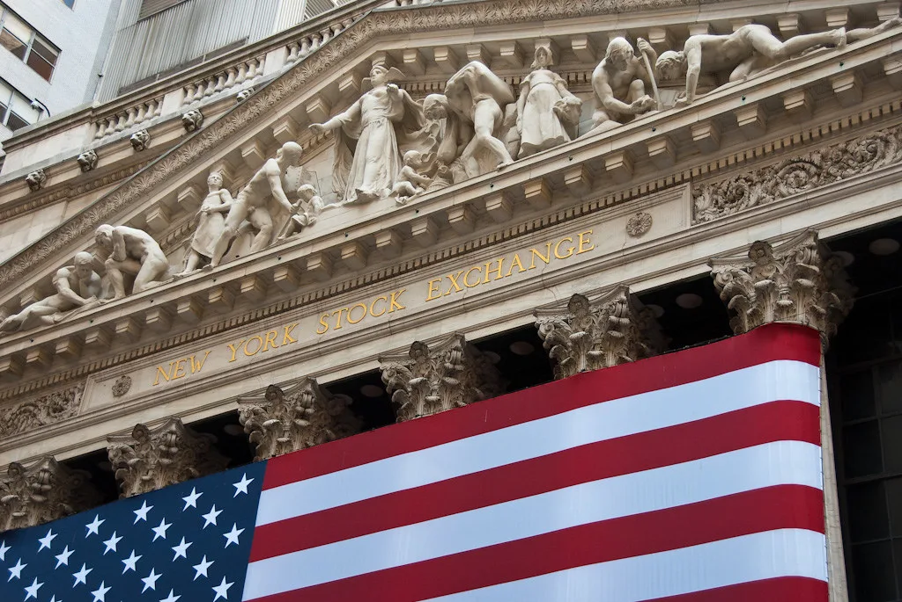

미국 반도체 대기업 인텔의 실적 충격이 밤사이 국내 증시로 번졌다. 31일 코스피는 전 거래일보다 206.92포인트(3.48%) 내린 5730.74로 마감했고, 코스닥지수도 3.83% 떨어진 724.38을 기록했다. 전날 뉴욕증시에서 나스닥이 2.86% 급락한 데 이어 국내 시장도 개장 초반부터 매물이 쏟아지며 지수 전반이 약세를 면치 못했다. 전날까지만 해도 반도체 랠리에 힘입어 사상 최고치 경신을 이어가던 흐름이 하루 만에 꺾인 셈이어서, 투자자들이 느낀 낙폭은 숫자 이상으로 크게 다가왔다.
이번 충격의 출발점은 인텔의 3분기 실적 발표였다. 공개된 수치만 보면 나쁘지 않았다. 조정 주당순이익(EPS)은 0.52달러로 시장 전망치 0.41달러를 웃돌았고, 데이터센터·AI 관련 매출은 전년 동기보다 78% 늘어난 73억 달러로 "15년 만에 가장 강력한 성장"이라는 평가를 받았다. 그런데도 주가는 하루 만에 28%대 폭락하며 사상 최악의 단일 거래일을 기록했고, 시가총액 1200억 달러(약 160조원)가 증발했다. 올해 들어 150% 넘게 오르며 반도체주 가운데 가장 가파른 상승률을 보였던 종목이었다는 점에서, 이번 폭락은 시장에 더 큰 충격으로 다가왔다.

투자자들을 돌려세운 것은 실적이 아니라 전망이었다. 인텔은 4분기 매출 가이던스를 150억~160억 달러로 제시했는데, 이는 시장이 기대했던 수준에 못 미쳤다. 더 결정적이었던 것은 최고재무책임자(CFO)의 발언이었다. 그는 2027년 자본지출이 "크게 늘어날 것"이라면서도 같은 해 양(+)의 현금흐름을 내기는 어려울 것이라고 경고했다. 막대한 투자가 계속되는데도 수익화 시점은 계속 뒤로 밀린다는 신호로 읽히면서, 투자자들의 실망은 숫자 이상으로 커졌다.
충격은 반도체 업종 전반으로 빠르게 퍼졌다. 필라델피아 반도체지수는 하루 만에 7.20% 떨어지며 지난 6월 23일 이후 최대 하락폭을 기록했고, 같은 날 실적을 내놓은 아마존의 인공지능(AI) 투자 계획에 대한 우려까지 겹치며 뉴욕 기술주 전반이 동반 약세를 보였다.
국내 증시에서는 그 여파가 곧바로 반도체 대형주로 옮겨왔다. 불과 하루 전 알파벳의 실적 쇼크로 한 차례 흔들렸던 삼성전자와 SK하이닉스는 이번에도 동반 약세를 보이며 지수 하락을 주도했다. 이틀 연속 빅테크발 충격이 국내 반도체 양강을 덮친 셈이어서, 그동안 지수 상승을 이끌어온 'AI 반도체 랠리'에 대한 투자자들의 경계심도 한층 짙어진 모습이다.
증권가에서는 이번 급락을 AI 산업 자체의 성장 둔화로 단정하기보다는, 공격적인 설비투자가 실제 수익으로 이어지는 시점에 대한 불확실성이 누적된 결과로 보는 시각이 많다. 투자 규모 확대 소식이 호재로만 받아들여지던 분위기가, 수익화 지연 우려 앞에서는 오히려 매도 심리를 자극하는 방향으로 바뀌고 있다는 것이다. 알파벳에 이어 인텔까지, 잉여현금흐름이나 자본지출 전망과 관련한 발언 하나하나에 시장이 민감하게 반응하는 패턴이 뚜렷해지고 있다는 분석도 나온다.
마이크로소프트와 메타 등 다른 빅테크들의 실적 발표가 뒤이어 예정된 만큼, 결과에 따라 국내 증시의 출렁임이 한동안 이어질 수 있다는 전망이 나온다. 반도체 업황 기대가 지수 상승의 핵심 동력이었던 터라, AI 투자의 수익성을 둘러싼 논란이 삼성전자·SK하이닉스 주가를 좌우하는 변수로 계속 작용할 것으로 보인다.